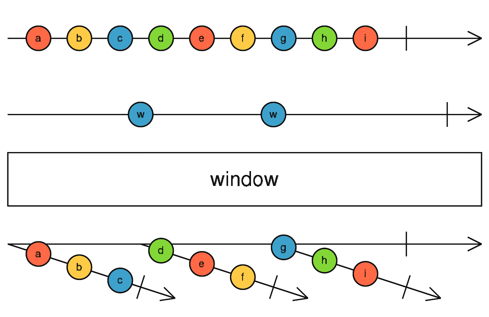

window
参数列表：
-
windowBoundaries
Observable<any>
一个Observable，用于告诉operator应该把当前source发出的值放入当前window,作为一个Observable发出去。并开启一个新的window
返回值: Observable <Observable <T>>
珠宝图:

功能说明:
- window 订阅Source,并且内部维护，并向外部发送一个window对象(是一个Observable),当 windowBoundaries 没有值发出的时候，source的value全部从当前window发出
- 一旦 windowBoundaries 有任何的值发出，当前window会被complete,新的window开启并发出。
备注事项:
- window很像buffer,但是和buffer返回一个数组不同，window返回若干个Observable
- 因为window的每个窗口期肯定不会重叠，所以虽然window返回若干个Observable,但是使用concatAll还是switch来扁平化window,效果都是等价的
点击不同按钮查看不同demo 代码效果